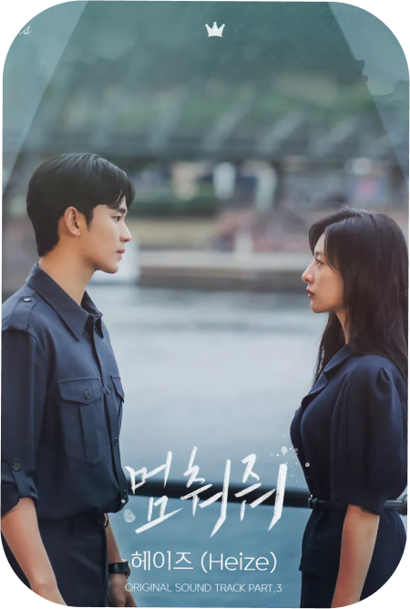

필연적으로 사랑은 애정과 증오를 동반한다
종종 이 사실은 비극처럼 느껴지기도 하지만
불을 껴안은 얼음처럼, 결말을 안다 해도
그 사랑을 멈출 수는 없었을 것 같다
Inevitably, love carries affection
and hate. Sometimes this fact feels tragic,
like fire that hugs ice, even knowing the ending of the
story, the love will not stop.
멈춰줘 - 헤이즈
필연적으로 사랑은 애정과 증오를 동반한다
종종 이 사실은 비극처럼 느껴지기도 하지만
불을 껴안은 얼음처럼, 결말을 안다 해도
그 사랑을 멈출 수는 없었을 것 같다
Inevitably, love carries affection
and hate. Sometimes this fact feels tragic,
like fire that hugs ice, even knowing the ending of the
story, the love will not stop.
고장난걸까 - 10cm
사랑은 보이지도, 들리지도, 손에 잡히지도 않기에,
이를 표혀나는 일은 종종 고장이라도 난 듯이 어설프고
자주 의도를 빗나간다. 하지만 가끔은 그렇게 터무니 없고
무모해 보이는 말과 행동이, 자신도 모르는 새에 기적을
일으키기도 하는 법이다
love is that we can't see, can't hear,
and can't touch so to express hard and
Difficult to convey the point but sometimes
makes miracle that i don't know to saying
미안해 미워해 사랑해 - crush
"왜 하필 이때가 떠올랐을까 만약 여기서 내가 ,
죽는다면, 마지막 순간에 네 생각을 하는걸까?"
"Why isn't this day? If i die here,
think of me at the last moment?"

일기 - 김나영
일기를 통해 우리는 지나간 기억을 더욱 선명하게 인화한다.
기억을 되감으며 그때는 보지 못했던 것들을 새롭게 발견하기도 하고,
감추었기에 진솔했던 감정들과 마주하기도 한다.
대답 없는 고백, 가닿지 못한 진심 같은 것들.
Through our diaries, we print our past
memories more clearly.
I rewind my memories and discover
new things that I didn't see then,
They also face honest feelings
because they hide them.
Confessions without answers,
things like heart that couldn't be reached.

청혼 - 김수현
타오르는 석양처럼 충만한 기쁨 속에서
어떤 슬픔도, 눈물도 들어올 수 없는 곳으로
다정하게 손을 맞잡고 걸어 갈 것이다.
"집에 가자"
like a burning loverm we will stand
affectionately holding hands and go
to a place where neither sadness nor
tears can add to the sorrow.
"Let's go home"